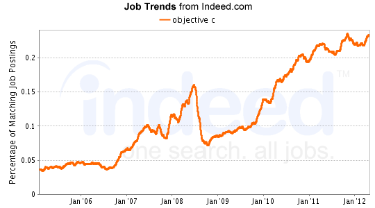
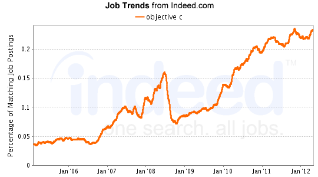

Cross Platform Mobile App Development
Baby BirdieAlper Sunar
Aug 2012
Alper Sunar
Aug 2012
| Native | Web | |
| Languages |
|
|
| Performance | Fast, native access to hardware | As fast as JavaScript execution engine |
| Phone features (camera, contacts etc.) | Integrated | Accessible via plugins |
| Application Design | Native look and feel | Subject to browser inconsistencies |
 



Part I
Check out official documentation / mailing lists. Clone sample app and hack away.


Backbone.js gives structure to web applications by providing models with key-value binding and custom events, collections with a rich API of enumerable functions, views with declarative event handling, and connects it all to your existing API over a RESTful JSON interface.


Part II
Alper Sunar
alper_sunar@yahoo.com
https://github.com/asunar/AustinCodeCamp2012-Lightning-Talk